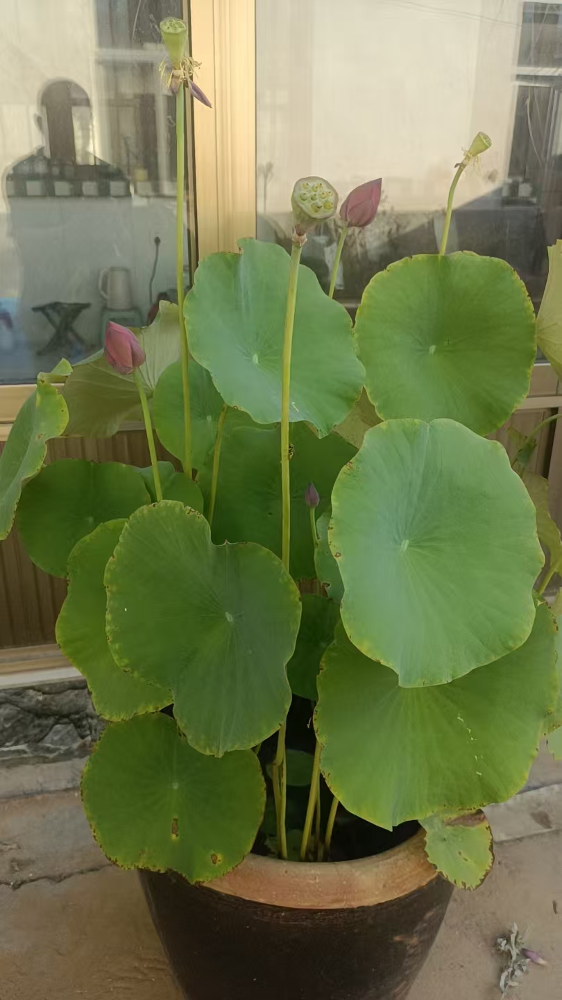

20260627现在的家长比孩子还急于求成
原始对话记录现在的家长比孩子还急于求成
这两天，我发现一个问题
我不听任何宣传，不听任何报告，不参加任何会议
才发现，我是原汁原味的我
啥也不会，啥也不是
自己的认知，决定了自己

以下为编者整理的主题文章
编者整理 · 主题文章
家长比孩子还急于求成：一则自省短记
一句话结论：本页只有寥寥数语，标题点出"现在的家长比孩子还急于求成"，正文却落在一句自省上："不听宣传、不听报告、不参加会议，才发现我是原汁原味的我……自己的认知，决定了自己。"属短记，非育儿指南。
一、本页是什么
先说清楚：本页原文很短，全文不足百字，只有一句标题和几句自省，另附一张图片。它不是成篇的教育文章，而是一则随手记下的念头。这里围绕标题做一点阐发。
二、"家长比孩子还急"
标题一句"现在的家长比孩子还急于求成"，点出一个常见现象：催的人比被催的人更慌。孩子学得慢一点、卡一下，家长先沉不住气，于是加码、比较、抢跑。
原文没有展开，但这句话本身可以当镜子照一照：这份着急，是孩子的需要，还是家长自己的焦虑？
三、"自己的认知，决定了自己"
正文本是自省：
"这两天，我发现一个问题——我不听任何宣传，不听任何报告，不参加任何会议，才发现，我是原汁原味的我。啥也不会，啥也不是。自己的认知，决定了自己。"
去掉自谦，"自己的认知，决定了自己"是这页唯一想留下的判断：人的位置，很大程度上由自己看问题的方式决定。用在教育上，也是先看家长怎么看，才谈怎么教。
四、家长焦虑常见的几个来源
结合同集群记录，可把这类着急归成几条：
| 来源 | 表现 |
|---|---|
| 比较 | 盯着"别人家孩子" |
| 抢跑 | 提前学、加课 |
| 结果导向 | 只看分数不看过程 |
| 自身焦虑转移 | 把自己的不安压给孩子 |
（可对照本集群《教育孩子有紧迫感》，那篇讲的是"该有压力"的另一面。）
五、与同集群记录的关系
本页属"家长心态"这条线：与《教育孩子有紧迫感》（讲适度压力）、《别过分管孩子》（讲分寸）互为补充。三篇合看，脉络是——别太松、也别太急，先管好自己的认知。
六、常见问题
问：本页有没有讲具体方法？ 没有。原文只有一句话和一个自省，本站如实说明，不替它编方法。
问："急于求成"到底好不好？ 看分寸。适度紧迫能推人向前，过头则易伤亲子关系、也伤孩子兴趣。参见《教育孩子有紧迫感》。
问：为什么这页这么短还单列一篇？ 因为它是集群里"家长焦虑"这条线的引子，主题明确，故保留并加注。
七、提醒
- 本页为短记的整理与注释，非育儿建议；
- 家长焦虑若影响到亲子关系或自身情绪，可寻求心理或家庭教育方面的帮助；
- 一切照搬需谨慎，各家情况不同。
说明与免责：本站为民间修炼、民俗文化与传统文化资料的整理与记录，内容源自传承者口传与个人修习体会，仅供文化交流与研究参考，不构成医疗、健康、投资或任何功效承诺。所述内容属传统术数范畴，请理性看待；如身体不适，请及时就医。请遵守法律法规与公序良俗。